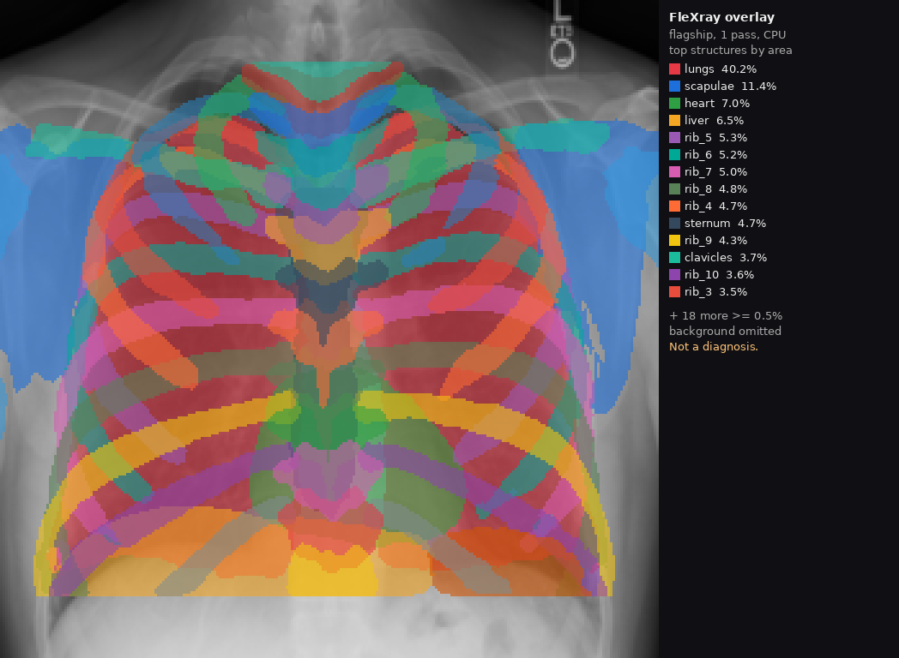

FleXray, exemplo estático
Uma passagem do modelo flagship (sem ensemble) num raio-X de tórax em domínio público. As cores se sobrepõem porque cada estrutura é um canal independente, em 256×256. Isto é ilustração de pesquisa, não diagnóstico.

Imagem de entrada: Chest Xray PA 3-8-2010, CC0. Modelo: VictorButoi/flexray (pesos CC-BY-NC-4.0). Demo interativo oficial: flexray.csail.mit.edu. Paper: arXiv:2609.26756.